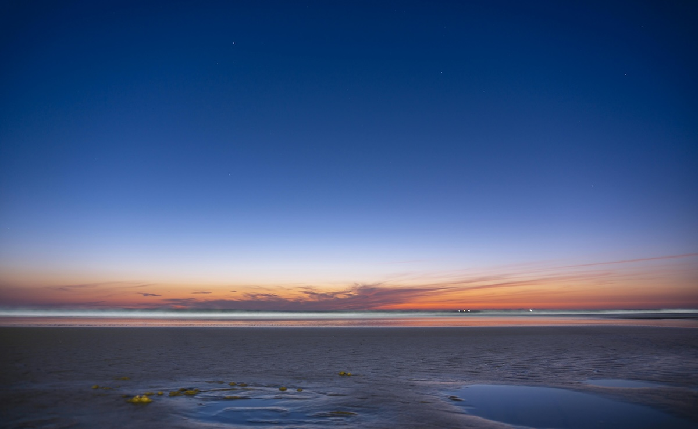

Mavi Saat: Fotoğrafçılıkta Büyüleyici Anlar
Fotoğrafçılıkta ışığın önemi tartışılmaz bir gerçektir. Fakat bazı anlar vardır ki, ışık öylesine büyüleyici ve özel bir hale bürünür ki, bu anları yakalamak bir sanat haline gelir. İşte o anlardan biri de “Mavi Saat”tir. Peki, mavi saat nedir ve fotoğrafçılıkta neden bu kadar değerlidir?
Mavi Saat Nedir?
Mavi saat, güneşin doğmasından hemen önce ve batmasından hemen sonra, gökyüzünün yumuşak bir mavi tonuna büründüğü kısa bir zaman dilimini tanımlar. Güneşin ufkun hemen altında olduğu bu anlarda, gün ışığı tamamen kaybolmamış olsa da, doğrudan güneş ışığı yerini dolaylı bir aydınlatmaya bırakır. Bu da fotoğraflara çok özel, sakinleştirici bir atmosfer kazandırır.
Mavi saat, genellikle gündoğumundan yaklaşık yarım saat önce ve gün batımından yarım saat sonra başlar ve yaklaşık 20 ila 40 dakika sürer. Bu süre, yılın mevsimine ve bulunduğunuz coğrafi konuma göre değişiklik gösterebilir. Mavi saatin büyüsü, fotoğrafçıların bu kısa süre içinde ışığı nasıl yakaladıklarına bağlıdır.

Mavi Saatin Fotoğrafçılıktaki Önemi
- Benzersiz Işık ve Atmosfer: Mavi saat, gökyüzünün koyu mavi tonları ve şehrin yapay ışıklarının yumuşak parıltıları ile harmanlandığı eşsiz bir zaman dilimidir. Işık, ne gündüz gibi sert ne de gece gibi karanlıktır. Bu durum, manzaralarda ve şehir fotoğraflarında mistik bir atmosfer yaratır.
- Yüksek Kontrast: Bu zaman diliminde ışık yumuşak olduğu için gölgeler daha az belirgin olur ve detaylar daha net çıkar. Gökyüzü ve yer yüzündeki objeler arasında harika bir kontrast oluşur. Mavi tonlar ve yapay ışıkların turuncu-sarı renkleri muazzam bir denge oluşturur.
- Uzun Pozlama Fırsatları: Mavi saat, uzun pozlama fotoğrafları çekmek için idealdir. Özellikle şehir manzaralarında ışık izlerini yakalamak, su yüzeylerini pürüzsüz bir hale getirmek ya da bulutları flu hale getirmek için bu anı kullanabilirsiniz. Uzun pozlamalar, hem estetik hem de teknik olarak fotoğraflarınıza derinlik katacaktır.
- Doğal Renk Tonları: Mavi saatte, doğal olarak soğuk tonlar baskındır. Eğer fotoğraflarınızda daha sakin, melankolik ya da mistik bir hava yaratmak istiyorsanız, bu anın renk paleti size harika fırsatlar sunar.
Mavi Saatte Fotoğraf Çekmek İçin İpuçları
- Planlama: Mavi saat oldukça kısa bir zaman dilimidir. Bu yüzden doğru konumu ve çekim açısını önceden planlamak çok önemlidir. Fotoğrafını çekmek istediğiniz manzarayı önceden keşfetmek, ışığın nasıl değişeceğini tahmin etmenize yardımcı olabilir.
- Tripod Kullanımı: Işık seviyeleri düşük olduğu için mavi saatte çekim yaparken tripod kullanmak şarttır. Uzun pozlamalar ve düşük ISO değerleri ile çekim yapmak için sabit bir kameraya ihtiyaç duyarsınız.
- Düşük ISO, Uzun Pozlama: Mavi saat boyunca, genellikle düşük ISO ayarları (100-200 arası) ve daha uzun pozlama süreleri kullanmak en iyi sonuçları verir. Bu sayede, görüntüdeki parazitlenme azalır ve daha temiz fotoğraflar elde edersiniz.
- Manuel Beyaz Dengesi: Otomatik beyaz dengesi genellikle mavi saat boyunca ışığı yanlış algılayabilir. Bu yüzden manuel beyaz dengesi ayarı yaparak daha doğal ve doğru renk tonları yakalayabilirsiniz.
- Yapay Işıklarla Oynamak: Şehir manzaralarında mavi saat sırasında yapay ışıkların parıltısı fotoğraflarınıza ilginç bir derinlik katabilir. Bu ışıkların doğru yerleştirilmesi ve çerçeveye dahil edilmesi, görsel olarak zengin fotoğraflar oluşturmanızı sağlar.
Mavi saat, fotoğrafçıların ışık ve gölge oyunlarıyla sanatsal kareler yakalayabileceği büyülü bir zaman dilimidir. Gökyüzünün derin mavi tonları, şehrin veya doğanın yumuşak aydınlatmasıyla birleştiğinde ortaya çıkan bu anlar, fotoğrafçılara sınırsız yaratıcılık sunar. Bu kısa ama değerli zaman diliminde çekilen fotoğraflar, sıradan karelerden sıyrılıp unutulmaz görsel hikayelere dönüşebilir.
Eğer fotoğrafçılığa yeni başlıyorsanız ya da profesyonelseniz, mavi saati kaçırmamanızı öneririm. Doğru planlama, teknik bilgi ve biraz sabır ile bu özel anları yakalayabilir ve büyüleyici fotoğraflar çekebilirsiniz.